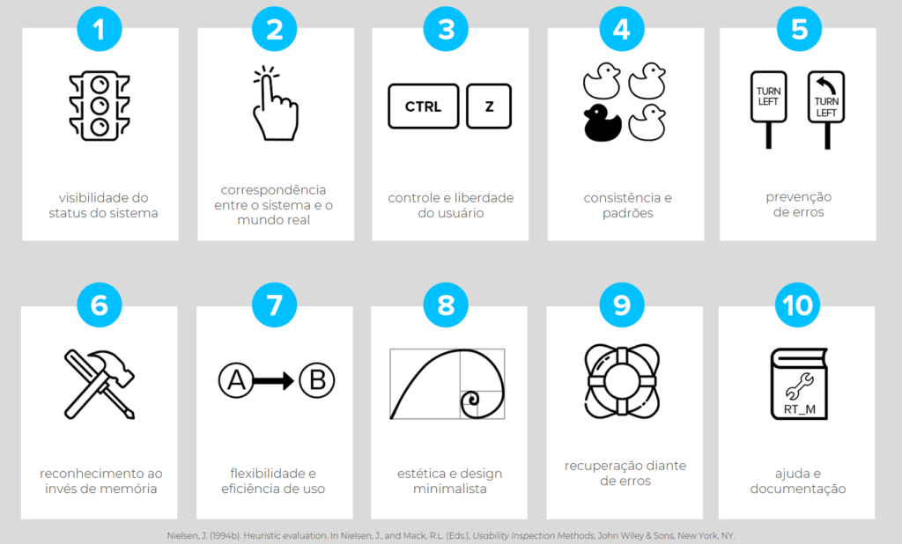

Módulo 4: Heurísticas de Nielsen
Conheça os princípios de usabilidade de Jakob Nielsen e aprenda a avaliar interfaces, identificar falhas de experiência e propor melhorias na interação entre pessoas e sistemas.

Conteúdo Programático
Acompanhe as aulas correspondentes a este módulo.
-
Aula 1
Aula 1 - O que são Heurísticas
Introdução aos conceitos e diretrizes fundamentais para o projeto de interfaces usáveis.
-
Aula 2
Aula 2 - Visibilidade e Controle
Mantenha o usuário informado sobre o andamento do sistema e ofereça caminhos claros para navegação e controle.
-
Aula 3
Aula 3 - Consistência e Padrões
Siga convenções estabelecidas para que padrões visuais e funcionais evitem qualquer confusão ou esforço de reaprendizagem.
-
Aula 4
Aula 4 - Prevenção de Erros
Crie proteções ativas e mensagens preventive que evitem falhas comuns antes mesmo que elas ocorram.
-
Aula 5
Aula 5 - Inspeção de Usabilidade
Conduza avaliações técnicas e sistemáticas em busca de barreiras e oportunidades de melhoria na interface.